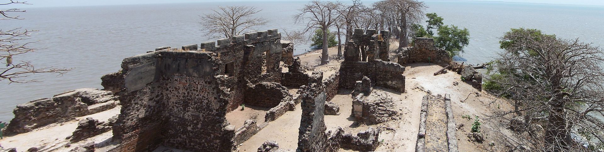
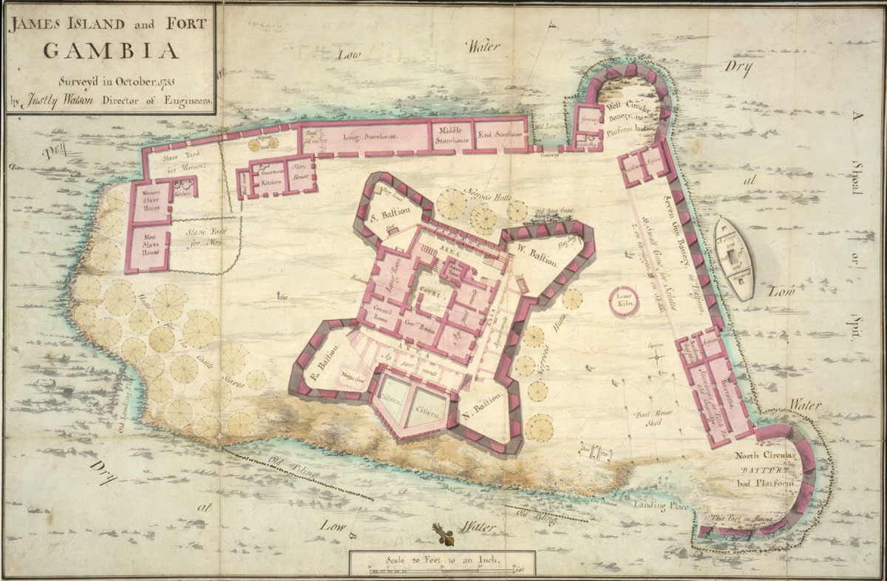
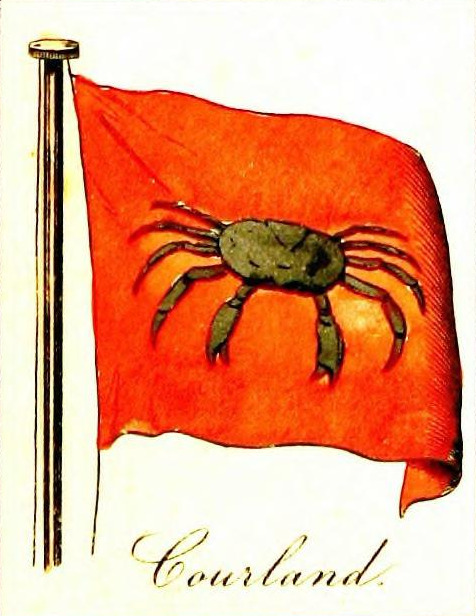
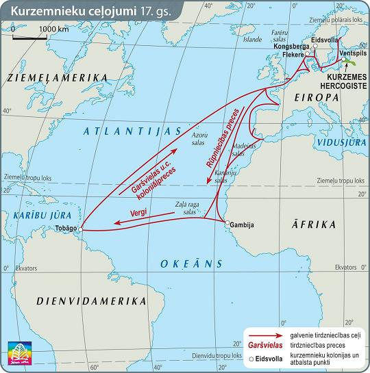
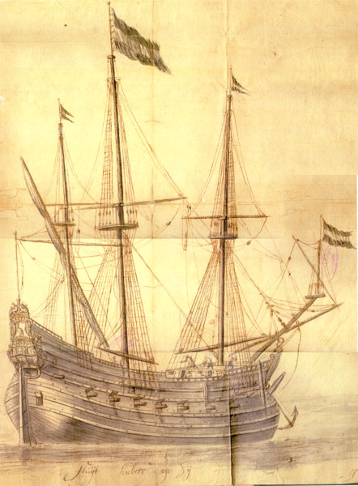

Letonia Brasil
August 7, 2020
A Colônia Leta no Caribe
Quando pensamos na colonização do novo mundo, no comércio colonial e da pirataria no Caribe, os países que vêem a nossa mente são Inglaterra, Espanha, Portugal, Holanda… É difícil encontrar alguma pessoa que lembre-se da Letônia entre os países que se lançaram ao mar na busca por ouro e glória nas Américas.
Muitos e muitos anos dos Letos chegarem no Brasil como imigrantes, os conquistadores letos atravessavam o atlântico em Galeões para criar suas colonias ultramarinas. O artigo de hoje irá explicar um pouquinho sobre a época que a Letônia se lançou ao mercantilismo.
O Ducado da Curônia e Semigália
A Letônia hoje é separada em 4 regiões: Latgale, Vidzeme, Kurzeme e Zemgale – as duas últimas regiões são traduzidas para o português como Curônia e Semigália. Após quase um século de guerra envolvendo a Polônia, Suécia e Rússia, essas duas regiões formaram um pequeno ducado em 1561. Se você já visitou o palácio de Rundale, na Letônia, você conhece bem o impacto e a riqueza deste ducado.
O Ducado era governado por uma nobreza balto-germânica, isto é, famílias alemãs que haviam se instalado durante a cristianização da região. O Duque era – em teoria – vassalo do rei da Polônia e Lituânia, mas em diversos momentos da história agia de forma independente, fazendo acordos e parcerias comerciais.
.jpg) O Palácio de Rundale, construído em 1736, foi o símbolo do poder dos Duques da Curônia e Semigália.
O Palácio de Rundale, construído em 1736, foi o símbolo do poder dos Duques da Curônia e Semigália.
O mais famoso dos Duques foi Jacob Kettler (Jēkabs Ketlers). Nascido em Kūldiga em 1610, o jovem duque foi estudante na Universidade de Leipzig e sempre foi fascinado pela construção naval (que estudou em Amsterdã) e pelo Iluminismo. Ele foi o idealizador e responsável pela colonização leta do Caribe e África
Jacob assumiu o poder em 1642, e logo começou uma série de reformas no Ducado, fazendo acordos comerciais com Portugal, Holanda, França e Inglaterra. Ele era conhecido como um governante justo e amigo dos Letos – que mesmo sendo de família alemã, sabia a Língua Leta. Houve melhorias na agricultura e manufatureira, que fizeram o ducado próspero e influente.
Sob o governo do Duque Jacob, a região da Letônia era uma das maiores produtoras navais da Europa. Produzindo navios, velas, corda, armas, canhões (considerados os melhores produzidos na época) e entre outros.navios bem equipados – navios de guerra e fragatas com entre 30-60 canhões cada. Uma fonte indica no séc. 17 a Curônia produziu 59 navios de guerra com 1416 canhões, o que era igual a 58% da tonelagem da armada espanhola e 37% da frota britânica na época de Cromwell.
Gambia
 Ruinas do forte leto na Gâmbia
Em 1651, Jacob conseguiu a permissão dos chefes nativos da Gâmbia, na África, e enviou uma tropa para estabelecer um forte no rio Gâmbia. Localizado em uma ilha fluvial que divide o rio em dois canais norte e sul, o forte se transformou em um entreposto comercial e diversas famílias foram trazidas para a área.
O forte foi construído seguindo as regras contemporâneas da engenharia miliar. A estrutura principal tinha a forma de retângulo e era flanqueada a cada esquina por um bastião, que era triangular.O forte ainda contava com uma pequena igreja. No entanto, não possuía suprimento de água, e por isso precisava comercializar com os locais.
O rei do Combo (atual Gâmbia) não só ajudou comercialmente o forte como arrendou terras para o Ducado em Jufureh, Gassan, e também na cidade de Banjul, a atual capital da Gâmbia. A ilha e forte foram batizadas com o nome do Duque, Jacob, até 2011, quando a ilha foi renomeada para Kunta Kinteh Island.
 O Forte Jacob
Tobago
Os navios do Ducado começaram a fazer viagens para as índias ocidentais (as ilhas do Caribe denominadas Antilhas e Bahamas) já antes de 1634. Na época a pequena Tobago era uma ilha de posição estratégica – mas extremamente perigosa. Os holandeses e espanhois brigavam pela ilha, normalmente decimando a população que habitava lá. Em 1639, a primeira tentativa da Curônia se estabelecer na ilha, com 212 colonos, falhou. Se suspeita que as descrições de Tobago pelo capitão inglês John Ponytz foram parte da inspiração para o livro “Robson Crusoé”, de Daniel Defoe.
O Duque então contactou o capitão holandês Cornélius Caron (que se suspeita tenha vivido no Brasil holandês) para reatar as tentativas em 1642. No dia 20 de Maio de 1654, o navio Das Wappen der Herzogin von Kurland (“As armas da duquesa da Curônia”) desembarcou, carregando 45 canhões, 25 oficiais, 124 soldados e 80 famílias de colonos (famílias letas, apesar da nobreza ser alemã) para ocupar o Tobago. O capitão Wilhelm Mollens declarou a ilha “Nova Curônia”. Um forte foi erguido na parte sudoeste, chamado Forte Jacobus (Jekabforts) e a cidade ao redor de Jacobsstadt (Jekaba pilseta). Outras partes também foram dados nomes como Baía Curônia, Baía de Jacobs, Nova-Mitau (Nova-Jelgava), etc…
 A bandeira naval da Curônia
O forte de Tobago também se tornou uma das primeira igreja luterana nas Américas. Tobago se tornou um grande centro de rotas comerciais, os bens exportados para a Europa incluíam açúcar, tabaco, café, algodão, gengibre, índigo, rum, cacau, conchas de tartaruga, pássaros tropicais e suas penas. Polônia, Suécia, Moscóvia (precursora da Rússia), Grã-Bretanha, Espanha e Holanda eram alguns dos países que recebiam os produtos da colônia.
Os empreendimentos em Tobago e Gâmbia empreenderam o prestígio e poder do pequeno Ducado muito além de suas fronteiras. Os navios de Jacob – que carregavam uma bandeira de um caranguejo escuro em um fundo vermelho – eram reconhecidos pelo mundo mercantil.
 O comércio triangular entre o forte na Gâmbia, a colônia de Tobago, e o ducado da Curônia.
O Fim da Experiência Colônial
Os Duques de da Curônia várias vezes propuseram formas de governo democráticas e autônomas para Tobago, em 1681 e também em 1698, garantindo as liberdades de congregar e formar sociedades, oferecendo independência religiosa e livre comércio. Tobago poderia ter se tornado a primeira república colonial do mundo com um parlamento, também uma universidade.
Em 1658, a Suécia declarou guerra a Polônia, e portanto, também ao seu vassalo, o Duque Jacob. As forças suecas invadiram o pequeno Ducado, tomando o Duque e sua família como prisioneiros. Durante esse período navios não conseguiam mais ser enviados para as colônias.
No ano seguinte, um motim em Tobago tomou o poder do governador e entregou a ilha aos Holandeses. O duque Jacob tentou retomar a ilha em 1669, mas sem muito sucesso. Apenas após uma batalha entre os Franceses e Holandeses, um outro navio chamado der Schwan (“O Cisne”) chega para construir um novo forte na Baia da Curônia em 1880. Infelizmente, após a invasão da Suécia, o Duque Jacob nunca conseguiu reconstruir o seu império marítimo, falecendo em 1882. Seus sucessores nunca foram tão iluminados ou astutos quando Jacob.
Em 1693, um navio dinamarquês que para de passagem em Tobago e documenta uma próspera e independente colônia da Curônia. Os Courônios mostram aos dinamarqueses seus amplos estoques de produtos, prontos para serem exportados para sua terra natal, e mencionam que o último barco da Curônia chegou em agosto, 1688.
 Uma fragata de guerra do Duque Jacob.
Esses Curônios em Tobago desaparecem nas brumas da história, presume-se que eles tenham se misturado e formado a atual população de Tobago. Ainda existem sobrenomes letos como Birse , Sils, Wilks, Dibbens. Courlander ou Kurlander é um sobrenome popular do Caribe entre a população africana. Pela década de 1990, um leto em São Paulo conheceu um capitão do mar de Tobago, meio africano, que declarou ser Curônio e que uma importante herança de família, tranças loiras de sua grande bisavó foi passada de geração em geração. Ele também descreveu alguns pratos populares de porco da Curônia preparados em sua família e mencionou que em casa eles faziam pastalas, calçados de camponês letões feitos de couro flexível.
A Colônia leta em Tobago pode não existir há muitos séculos, mas o impacto dos letos na região ainda é lembrado. Museus e monumentos foram levantados durante o século XX para relembrar a amizade entre os dois países e até hoje os Letos da América realizam reuniões bianuais na ilha para celebrar o ano novo. O artigo da próxima semana falará um pouco mais sobre isso.
Escrito por Andreis Purim
Fontes cedidas por Guntars Gedulis baseado no material do Dr. Edgar Andersons, The Courlander Experience in Tobago.